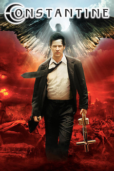

The Dark Knight : Rises |
Limitless |
Constantine |

|

|
 |
It has been eight years since Batman (Christian Bale), in collusion with Commissioner Gordon (Gary Oldman), vanished into the night. Assuming responsibility for the death of Harvey Dent, Batman sacrificed everything for what he and Gordon hoped would be the greater good. However, the arrival of a cunning cat burglar (Anne Hathaway) and a merciless terrorist named Bane (Tom Hardy) force Batman out of exile and into a battle he may not be able to win. |
Facing unemployment and his girlfriend's rejection, writer Eddie Morra (Bradley Cooper) is sure that he has no future. That all changes when an old friend gives him a drug that produces enhanced mental acuity. Stoked on the untested chemical, Eddie rises to the top of the financial world and attracts the attention of a tycoon (Robert De Niro) who intends to use him to make a fortune. But terrible side-effects and a dwindling supply threaten to collapse Eddie's house of cards. |
As a suicide survivor, demon hunter John Constantine (Keanu Reeves) has literally been to hell and back - - and he knows that when he dies, he's got a one-way ticket to Satan's realm unless he can earn enough good- will to climb God's stairway to heaven. While helping policewoman Angela Dodson (Rachel Weisz) investigate her identical twin's apparent suicide, Constantine becomes caught up in a supernatural plot involving both demonic and angelic forces. Based on the DC/Vertigo "Hellblazer" comics. |
|
Get more info about this film here |
Get more info about this film here |